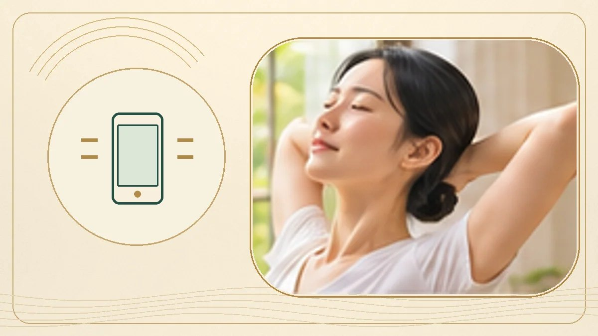

讓手機使用、姿勢變換與短暫離開螢幕成為容易實行的生活節奏。
從使用時間而不是完美姿勢開始
手機已成為工作聯絡、閱讀、通勤與娛樂的一部分。比起要求自己永遠維持同一種完美姿勢，更可行的做法是避免長時間不變，並安排離開螢幕的間隙。先回想最容易不知不覺使用很久的情境：午休追劇、睡前滑社群、回覆工作訊息，或坐在沙發上閱讀。找到情境後，才容易設計適合自己的提醒。
調整環境，減少一直低頭的時間
可以利用桌面支架或穩定的桌椅，讓螢幕的位置較容易觀看。若用手持裝置，注意不要為了抬高手機而長時間懸空雙臂；可讓手臂得到適當支撐。字體太小時，使用系統的放大功能比一直把頭靠近螢幕更方便。這些只是一般使用情境的調整，並非用來矯正某種身體構造。
把休息變成有提示的動作
苗栗縣政府衛生局的低頭族保養資料建議，使用裝置時規律安排休息。實際生活中可以用一段影片結束、完成一項工作或手機提醒作為起點。先放下裝置，讓視線離開螢幕，依自己的能力換個姿勢或起身走一走。休息不必變成另一項高難度工作，不需要強迫自己做出大幅度頸部動作。
工作與娛樂可以用不同方法管理
工作訊息較難完全關掉，可以設定固定檢查時段，並在需要長時間閱讀時改用較大的螢幕。娛樂則可善用系統的使用時間提醒、關閉自動播放，或在睡前設定一個放下手機的時點。這些做法的目的不是批評使用手機，而是讓自己有更多決定何時開始、何時暫停的空間。
什麼時候該尋求專業評估
若出現持續或反覆的頸肩不適、麻木、無力、突然劇烈的疼痛或其他異常，應由合格醫療人員評估，不宜自行扭轉頸部或嘗試強力按壓。日常休息和民俗調理也不能替代醫療判斷。想了解一般肩頸放鬆洽詢方向時，可先描述自己的生活情境及接觸偏好，而不是用網路文章自行找出身體問題的原因。
讓休息提醒更容易看見
如果提醒通知太多，可能很快就被忽略。不妨選擇原本就有的生活節點，例如午餐前後或通勤到站後，再設定簡單的休息提示。當需要在公共空間使用手機，也應先注意行走安全，避免一邊走路一邊專注螢幕。
讀者常問：每次一定要休息很久嗎？
休息安排可以由可做到的小間隙開始，再依自己的工作與生活需求調整。關鍵是不要整段時間都保持相同的使用方式。若一天需要大量閱讀或回覆訊息，可以把休息提示放進原本的工作流程，例如每完成一段內容就離開螢幕一下。比起一次制定難以遵守的規則，更重要的是能長期做到。
參考資料
苗栗縣政府衛生局｜低頭族日常休息提醒（查閱：2026-11-26）
國民健康署｜中斷久坐，將活動融入生活（查閱：2026-11-26）
本文為一般生活與文化資訊，非個別醫療建議；尚待本人核定。服務項目、費用、時間及地點以洽詢確認為準。